Releasenotes eBlinqx Hypotheekadvies – Juli 2025
Onderstaande updates hebben wij in de maand juli doorgevoerd:
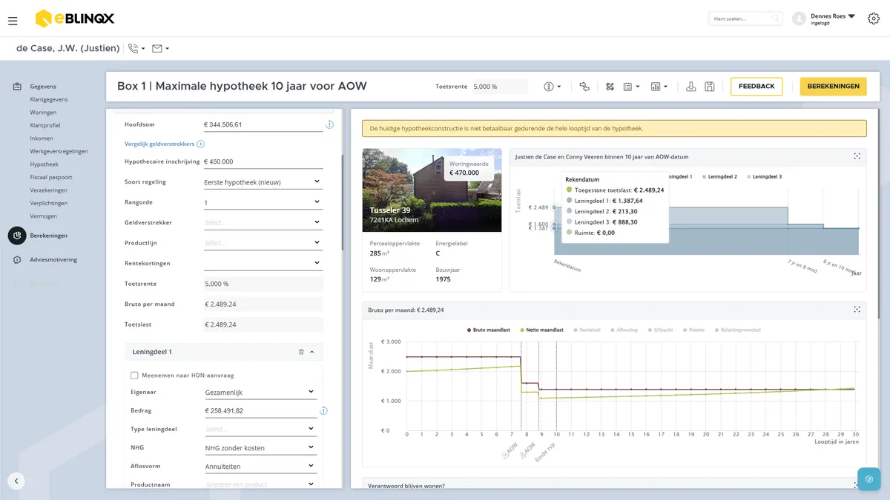
🎯 IT-27407: Verbeterde weergave resterende toetslast in grafiek ‘10 jaar voor AOW’
eBlinqx Hypotheekadvies heeft een volgende stap gezet in de doorontwikkeling richting het automatisch bepalen van een verantwoorde hypotheekhoogte in box 1 én box 3. In de grafiek ‘10 jaar voor AOW’ tonen we nu nog nauwkeuriger de resterende toetslast. Wanneer de resterende ruimte precies nul is, wordt dit niet langer als een negatieve waarde weergegeven (bijvoorbeeld -0), en wordt de bijbehorende toegestane toetslast voortaan in het groen getoond in plaats van rood. Dit voorkomt verwarring bij het beoordelen van de resterende bestedingsruimte en maakt het makkelijker om te zien of de hypotheek binnen de normen blijft.
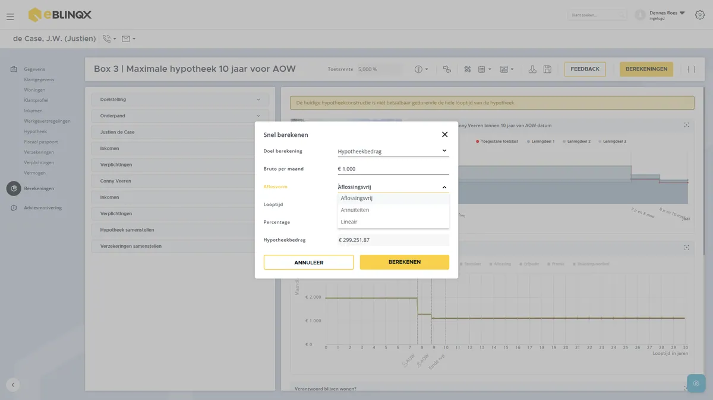
🔔 IT-27405: Uitbreiding 'Snel berekenen': Aflossingsvrij toegevoegd
Met ingang van vandaag is de tooling ‘Snel berekenen’ in eBlinqx Hypotheekadvies uitgebreid met de aflosvorm ‘Aflossingsvrij’. Hiermee wordt het mogelijk om – naast annuïtair en lineair – ook voor aflossingsvrije hypotheken snel en eenvoudig de bruto maandlast en het bijbehorende hypotheekbedrag te berekenen.
🔹 Wat is nieuw?
-
Ondersteuning voor aflosvorm ‘Aflossingsvrij’.
-
Bruto maandlast berekenen op basis van het hypotheekbedrag, of andersom: het hypotheekbedrag bepalen op basis van een gewenste bruto maandlast.
-
Je kunt de looptijd in maanden opgeven voor maximale nauwkeurigheid.
-
De rente kan worden ingevoerd tot drie cijfers achter de komma (bijvoorbeeld: 5,127%).
Deze uitbreiding maakt het nog eenvoudiger om verschillende scenario’s door te rekenen en snel inzicht te geven in de financiële consequenties voor jouw klant.
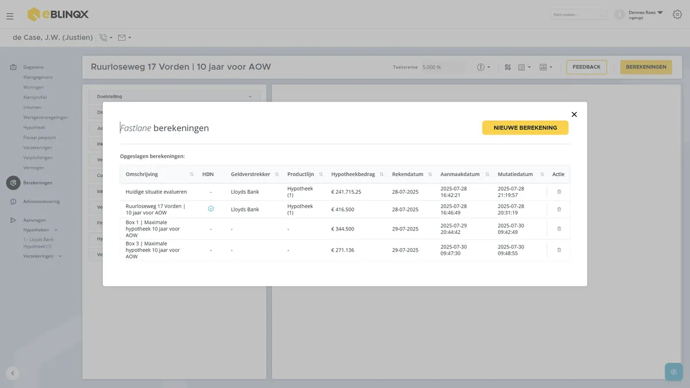
🔔 IT-27415: Verbeterde weergave mutatiedatum in het overzicht van berekeningen
Goed nieuws! We hebben de presentatie van de mutatiedatum in het overzicht van berekeningen verder verbeterd. Het is nu in één oogopslag duidelijk wanneer een berekening voor het laatst is aangepast. Hierdoor kun je sneller en overzichtelijker bepalen welke berekening actueel is – handig bij het werken met meerdere scenario’s of bij het terugpakken op eerdere berekeningen.
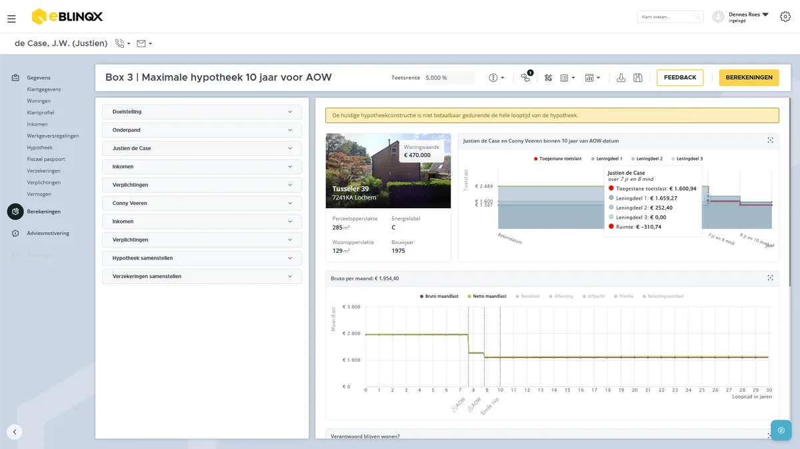
👉 IT-27393: Visualisatie aanpassing: kleur bolletje Toegestane toetslast in 10-jaar-voor-AOW-lijndiagram
Bij het onderdeel ‘10 jaar voor AOW’ in de lijndiagram tonen we een rode of groene lijn, afhankelijk van de mate waarin de maandlast binnen de toegestane toetslast valt. Tot nu toe werd het bolletje in de legenda bij ‘Toegestane toetslast’ echter altijd groen weergegeven, ongeacht de kleur van de lijn. Met deze update zorgen we voor visuele consistentie: Is de lijn in de grafiek rood, dan wordt het bolletje naast ‘Toegestane toetslast’ in de legenda ook rood. Is de lijn groen, dan blijft het bolletje in de legenda groen.
Deze aanpassing zorgt voor een duidelijker en consequenter beeld voor jou als adviseur, zodat je in één oogopslag kunt zien of de klant met de maandlasten nog binnen de gestelde normen valt, juist ook in de periode 10 jaar voor AOW.
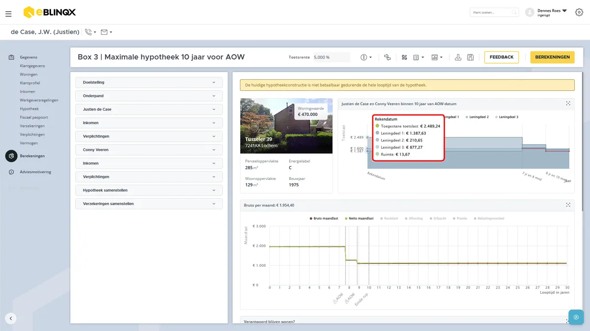
👉 IT-27394: Verbetering volgorde leningdelen in popup “10 jaar voor AOW”
We hebben de volgorde van de leningdelen in de popup "10 jaar voor AOW" aangepast. Tot nu toe werd de volgorde van de leningdelen weergegeven van boven naar beneden als: Leningdeel 4, 3, 2, 1. Dit is nu omgedraaid naar een meer logische en gebruiksvriendelijke volgorde: Leningdeel 1, 2, 3, 4Deze aanpassing sluit beter aan bij de volgorde waarin leningdelen normaal worden opgevoerd en bekeken binnen eBlinqx Hypotheekadvies. Hierdoor wordt het overzicht verbeterd en verkleint het de kans op interpretatiefouten bij het analyseren van de lasten in de periode vanaf 10 jaar voor AOW. De wijziging is per direct zichtbaar in de betreffende popup.
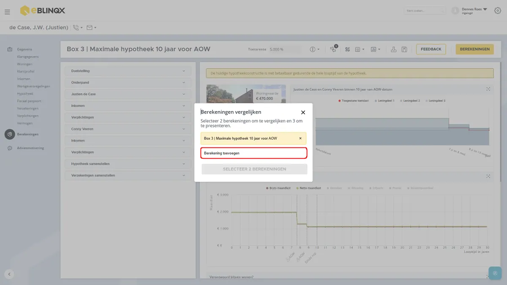
👉 IT-27381: Hernoeming knop: ‘Berekening Toevoegen’ → ‘Berekening toevoegen’
Om de schrijfwijze in eBlinqx Hypotheekadvies consistent en conform taalgebruik te houden, is de benaming van de knop ‘Berekening Toevoegen’ aangepast naar: ‘Berekening toevoegen’. De nieuwe schrijfwijze sluit beter aan bij gangbaar taalgebruik en de stijl van andere knoppen binnen eBlinqx Hypotheekadvies, waarin werkwoorden consequent met een kleine letter worden geschreven. Dit zorgt voor een uniformere en professionelere gebruikerservaring. Alle gebruikers van eBlinqx Hypotheekadvies zullen deze wijziging per direct terugzien in de gebruikersinterface. De functionaliteit van de knop blijft ongewijzigd.
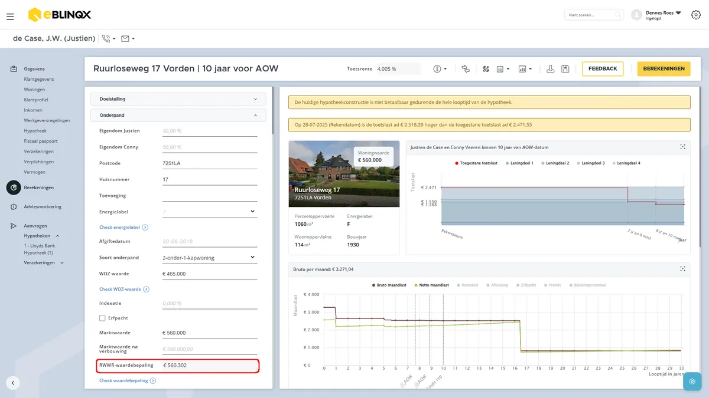
Bij het opvragen van een RWWR-waardebepaling in de sidebar van eBlinqx Hypotheekadvies bleef de laadspinner onterecht zichtbaar, ook nadat de waardebepaling al was afgerond. Dit wekte de indruk dat het systeem nog aan het laden was of mogelijk was vastgelopen. Met deze update verdwijnt de spinner automatisch zodra de waardebepaling is afgerond en het resultaat wordt weergegeven en is het voor jou als adviseur direct duidelijk dat het proces is voltooid. Deze verbetering voorkomt onnodige verwarring en draagt bij aan een soepelere gebruikerservaring. Je hoeft niet langer te twijfelen of de waardebepaling succesvol is uitgevoerd.
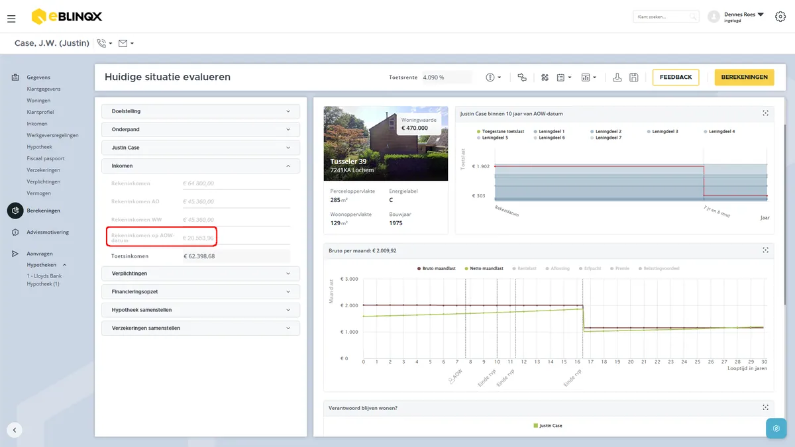
👉 IT-26817: Correcte AOW-berekening bij ontslag uit hoofdelijke aansprakelijkheid
Vanaf nu houdt eBlinqx Hypotheekadvies bij het doorrekenen van een situatie op basis van ontslag uit hoofdelijke aansprakelijkheid automatisch rekening met de alleenstaandenvariant van de AOW. Wanneer één van de kredietnemers wordt ontslagen uit hoofdelijke aansprakelijkheid past eBlinqx Hypotheekadvies automatisch het AOW-bedrag aan naar de alleenstaandenvariant en wordt het totale toetsinkomen vanaf AOW-datum juist weergegeven in de toetsing, financieringsopzet en adviestabellen.
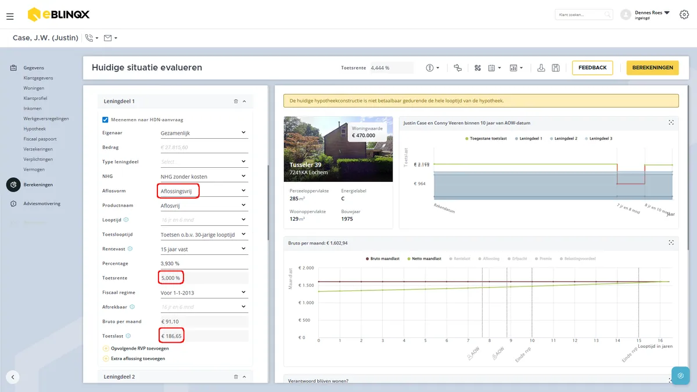
🛠 IT-19056: Aflossingsvrije toetsing bij Lloyds Bank
Bij het selecteren van Lloyds Bank als geldverstrekker in eBlinqx Hypotheekadvies wordt vanaf nu automatisch de toetslast van het aflossingsvrije leningdeel aangepast. Lloyds Bank beoordeelt aflossingsvrije leningdelen altijd als box 3-leningen, ongeacht de fiscale aftrekbaarheid van de rente.
Let op: Lloyds verstrekt nooit meer aflossingsvrij dan wat op basis van het inkomen vanaf AOW-leeftijd verantwoord is. Bij deze toetsing gaat Lloyds uit van een rente van 5,00%, waarbij wordt aangenomen dat de rente vanaf dat moment niet aftrekbaar is.
Met deze aanpassing zorgen we voor meer transparantie richting jou als adviseur én de consument, zodat de toetsmethodiek van Lloyds direct inzichtelijk is in het adviesproces.
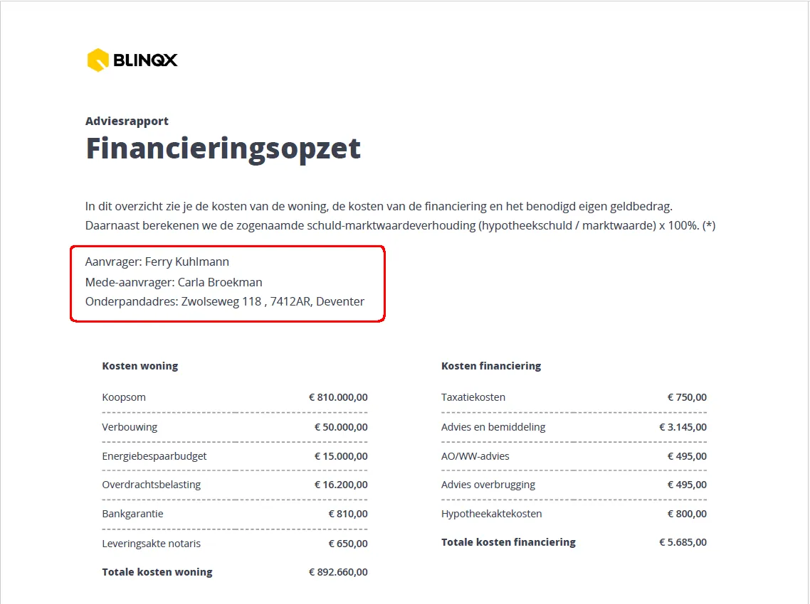
🎉 IT-27189: Naam klant en onderpand toegevoegd aan 'Financieringsopzet geldverstrekker'
Vanaf heden worden de namen van de aanvrager(s) en het adres van het onderpand automatisch opgenomen in het document ‘Financieringsopzet geldverstrekker’. Deze verbetering zorgt ervoor dat dit document beter aansluit bij de acceptatievereisten van geldverstrekkers. Hierdoor wordt administratieve dubbeling voorkomen en neemt de kans op afwijzing van stukken af.
Wat betekent dit voor jou als adviseur?
-
Verhoogde duidelijkheid en volledigheid van het document
-
Minder handmatig werk bij dossieraanlevering
-
Verminderde kans op onnodige retourmeldingen van de geldverstrekker
Let op:
Het document Financieringsopzet geldverstrekker is alleen los te downloaden via het selectiemenu en maakt geen onderdeel uit van het adviesrapport.
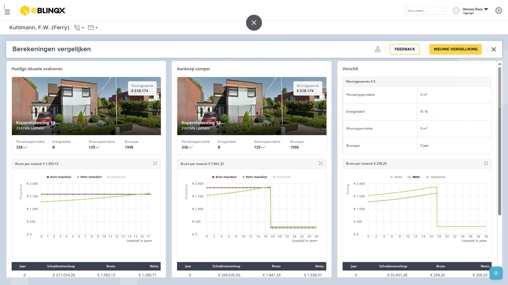
🛠 IT-27321: Fix styling ‘Berekeningen vergelijken’
Er was een stylingprobleem ontstaan binnen het onderdeel Berekeningen vergelijken. Door een eerdere codewijziging werd de opmaak van de kolom ‘Verschil’ niet langer correct weergegeven. Dit kon leiden tot een verwarrende presentatie van de berekeningen in de vergelijkingstabel. De styling van de kolom ‘Verschil’ is hersteld en sluit nu weer naadloos aan bij de rest van de opmaak.
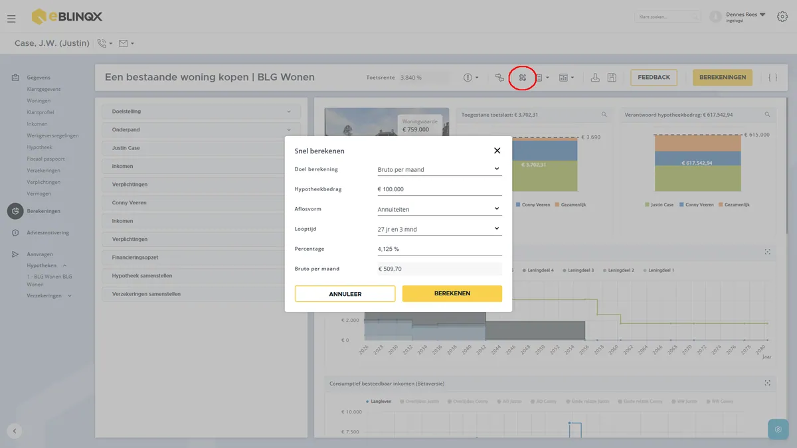
🎉 Nieuwe functionaliteit in eBlinqx Hypotheekadvies: snelle bruto maandlast- en hypotheekberekening!
We hebben goed nieuws! Op veler verzoek introduceren we een gloednieuw menu-item in de eBlinqx Hypotheekadvies-header: 🔧 Tooling. Met deze handige uitbreiding krijg je als adviseur direct toegang tot Snelberekenen. Met deze tooling kun je razendsnel:
-
💰 De bruto maandlast berekenen op basis van hypotheekbedrag, rente, looptijd en aflosvorm (annuïtair of lineair)
-
🏠 Het hypotheekbedrag berekenen op basis van gewenste maandlast, rente, looptijd en aflosvorm
Waarom deze toevoeging?
Soms heb je in een klantgesprek of telefoontje snel een indicatie nodig. Met deze tool kun je eenvoudig rekenen, oriënteren en adviseren – zonder dossiervorming of klantdata. Snel, licht en overzichtelijk!
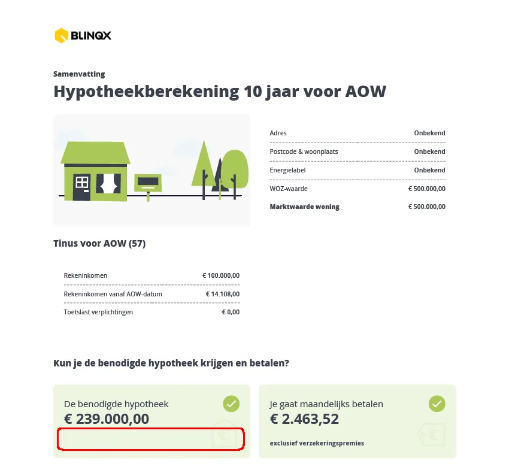
🎉 IT-27108: Rapporten voor klanten die richting hun AOW-leeftijd gaan!
Bij klanten waarbij één of beide aanvragers binnen 10 jaar de AOW-leeftijd bereiken, tonen we in het adviesrapport voortaan geen onderregel meer met een automatisch gegenereerd ‘Verantwoord hypotheekbedrag’. Waarom deze verbetering? In dit type situaties ligt de werkelijke leencapaciteit vaak lager en is sterk afhankelijk van de persoonlijke financiële situatie. Een standaard onderregel kon daardoor verwarrend zijn voor de klant en extra toelichting vragen van jou als adviseur.
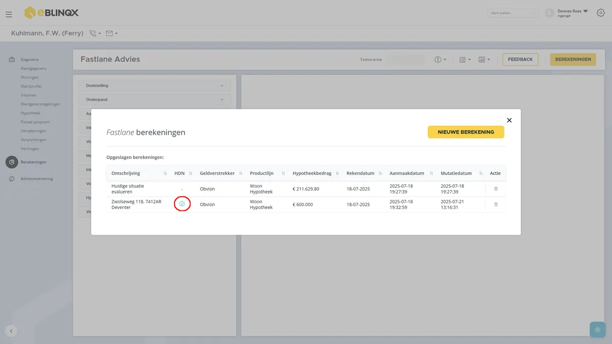
🎉 IT-27031: Snel zien of je berekening via HDN is aangevraagd!
Goed nieuws voor iedereen die snel wil schakelen in eBlinqx Hypotheekadvies: vanaf nu zie je in één oogopslag of een berekening al via HDN is verzonden! Bij elke berekening tonen we nu een duidelijke visuele indicatie zodra deze is gebruikt voor een HDN-aanvraag. Of je nu werkt met meerdere berekeningen per dossier of snel wilt terugvinden welke versie je formeel hebt ingediend — je hoeft niet meer te zoeken of te twijfelen.
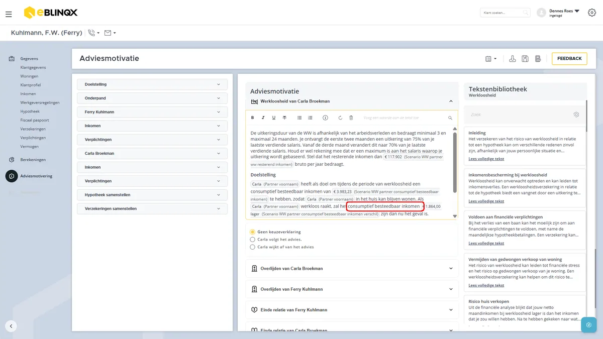
👉 IT-26963: "Consumptief besteedbaar inkomen" overal uniform gebruikt
Goed nieuws! Op verzoek van meerdere gebruikers hebben we in deze release de gebruikte terminologie binnen eBlinqx Hypotheekadvies en de rapportages geüniformeerd. Waar eerder verschillende termen zoals "Netto besteedbaar inkomen", "Besteedbaar inkomen" of "Consumptief Besteedbaar Inkomen" door elkaar werden gebruikt, hanteren we vanaf nu één heldere en herkenbare term.
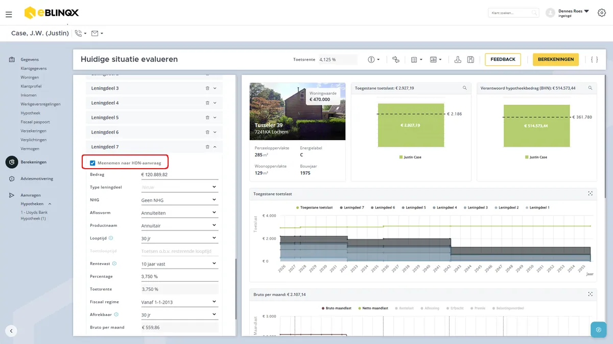
🎉 IT-27025: Alleen extra leningdeel standaard aangevinkt bij OHA-aanvraag
We hebben een slimme verbetering doorgevoerd in de HDN-aanvraag bij OHA. Bij OHA-situaties worden bestaande leningdelen automatisch gesplitst. Tot nu toe stonden alle leningdelen (zowel oud als nieuw) standaard aangevinkt voor opname in de HDN-aanvraag. Dat leidde soms tot verwarring én een onjuiste hypotheekconstructie in het aanvraagformulier. Vanaf nu geldt: Alleen het nieuw toegevoegde leningdeel wordt standaard aangevinkt voor HDN. De gesplitste oude leningdelen blijven standaard uitgevinkt.
Goed nieuws voor verduurzamingsliefhebbers én voor jou als adviseur! Vanaf nu kun je bij het samenstellen van de hypotheek per leningdeel de juiste productnaam selecteren. Dat betekent: meer precisie, minder handwerk én altijd het juiste renteaanbod. Neem bijvoorbeeld ASN Bank. Zij bieden meerdere verduurzamingsproducten aan in eBlinqx Hypotheekadvies – zoals Hypotheek, Bespaar Hypotheek en Duurzaam Wonen. Dankzij deze uitbreiding kun je nu ook bij een specifiek leningdeel binnen de productlijn Hypotheek kiezen voor Duurzaam Wonen.
Wat levert dit op?
✅ Automatische selectie van het juiste rentetarief uit de renteadministratie
✅ Correcte voorinvulling van het HDN-aanvraagformulier
✅ Volledig afgestemd op de wensen van jouw klant
🔧 Deze uitbreiding speelt in op een groeiende behoefte in de markt én zorgt dat jij als adviseur klaar bent voor de verduurzamingsvraag van morgen.
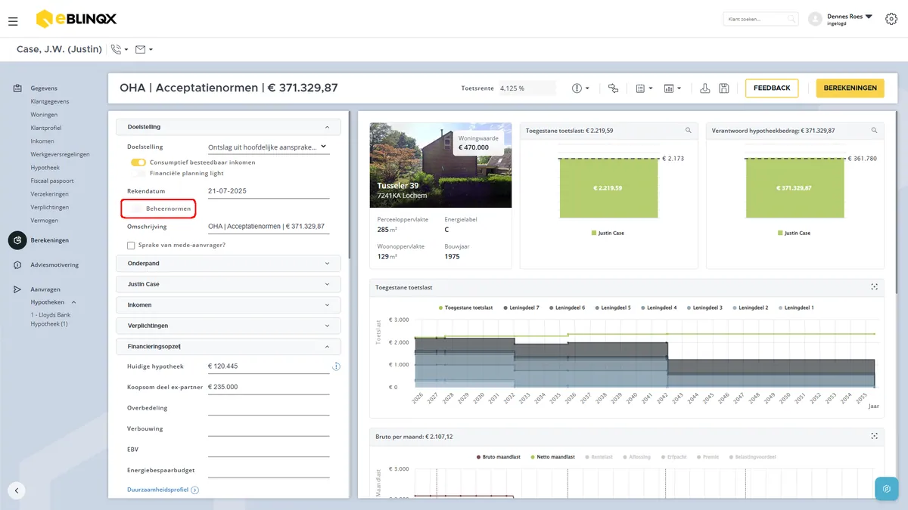
🎉 IT-27191: OHA-doelstelling nu ook op basis van acceptatienormen
Vanaf deze release kunnen berekeningen met de doelstelling Ontslag uit hoofdelijke aansprakelijkheid (OHA) zowel volgens de beheernormen als de acceptatienormen worden uitgevoerd. De adviseur heeft hierbij volledige regie: de gemaakte keuze wordt automatisch en correct opgeslagen in het dossier.
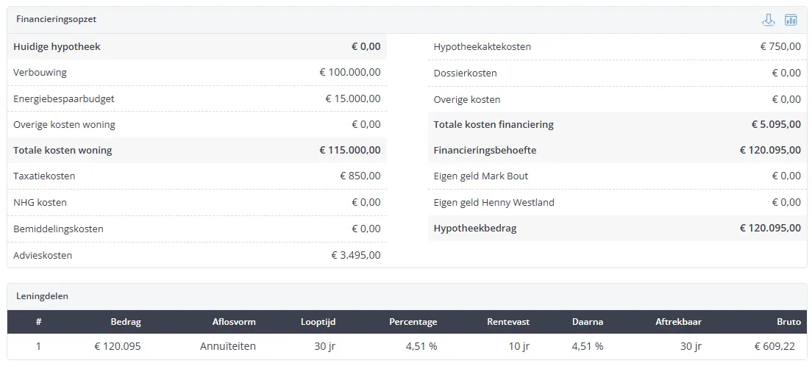
📄 IT-27006: Financieringsopzet nu ook te downloaden zonder bestaande hypotheek
Vanaf nu kun je de financieringsopzet gewoon downloaden wanneer er géén huidige hypotheek aanwezig is in het dossier — dus ook bij een ingevuld bedrag van € 0,00. Tot voor kort was hiervoor een handmatige workaround nodig. Die omweg is nu verleden tijd. eBlinqx Hypotheekadvies herkent voortaan correct dat er geen bestaande hypotheek is en genereert moeiteloos de juiste documentatie.
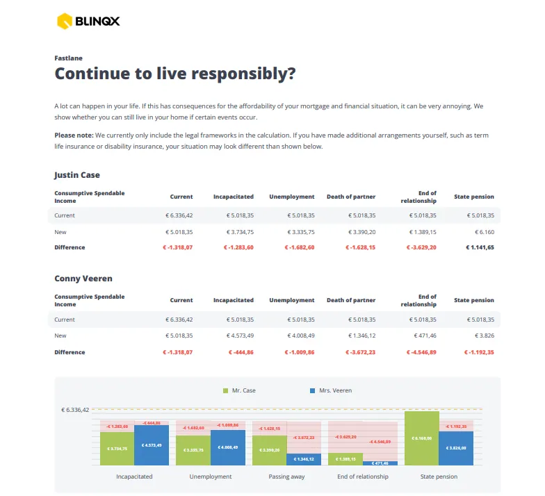
🌍 Engelstalige samenvatting nóg strakker en duidelijker!
Vanaf deze release wordt de zin ‘Yes, for an amount of € 0,00 per month’ niet langer getoond in de Engelstalige samenvatting van het adviesrapport wanneer er geen verzekeringspremie wordt berekend voor de thema’s: Overlijden van de partner, Arbeidsongeschiktheid en Werkloosheid. Deze verbetering zorgt voor een professionelere uitstraling van je rapport, zonder overbodige zinnen die kunnen leiden tot verwarring bij internationale klanten of expats.
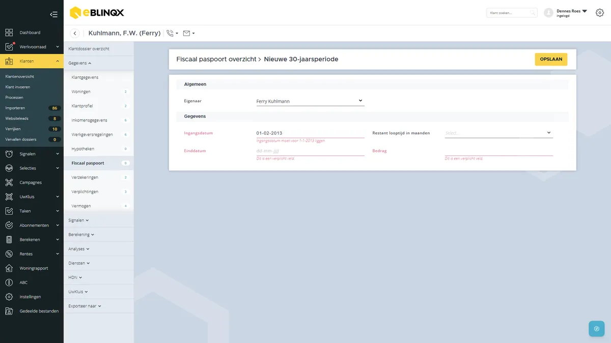
📢 IT-26892"Fiscaal Paspoort – Slimme controle op ingangsdatum 30-jaars periode
Binnen het Fiscaal Paspoort controleert eBlinqx Hypotheekadvies nu automatisch of de ingangsdatum van de 30-jaars periode correct is ingevuld. Wanneer een datum ná 31-12-2012 wordt ingevoerd (bijvoorbeeld 01-01-2013), verschijnt direct de melding: "Ingangsdatum moet voor 1-1-2013 liggen." Kortom: eBlinqx Hypotheekadvies helpt je nóg sneller en foutloos te werken.
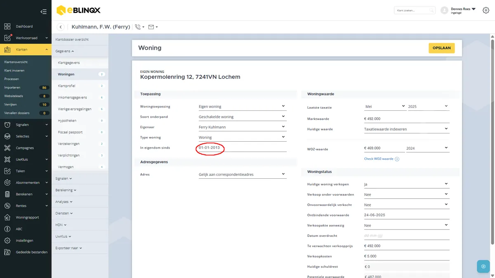
📢 IT-24272: Automatische prefill ‘In eigendom sinds’ bij huidige woning
De datum ‘In eigendom sinds’ bij het onderdeel Huidige woning of Woningen wordt vanaf nu automatisch geprefilled. eBlinqx Hypotheekadvies gebruikt hiervoor de ingangsdatum van het oudste leningdeel dat aan de betreffende hypotheek is gekoppeld. Deze slimme prefill-techniek werd al toegepast in de leesmodus (‘geschat o.b.v. oudste leningdeel’) en is nu ook beschikbaar tijdens het invullen van het dossier.
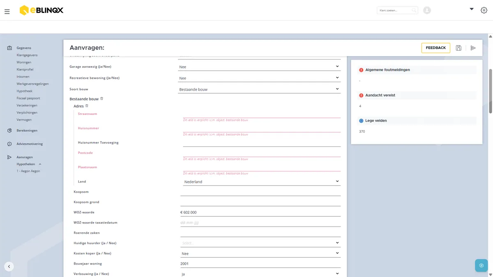
📝 IT-27105: HDN-aanvraagformulier herkent onderpandgegevens bij verbouwing nu correct
Bij HDN-aanvragen met als doel 'verbouwing' herkent eBlinqx Hypotheekadvies nu automatisch de reeds geprefillde onderpandgegevens uit het dossier. Deze gegevens worden voortaan direct en correct overgenomen in het HDN-aanvraagformulier. Hierdoor is handmatige invoer niet langer nodig en verloopt het aanvraagproces sneller, eenvoudiger en met minder kans op fouten.
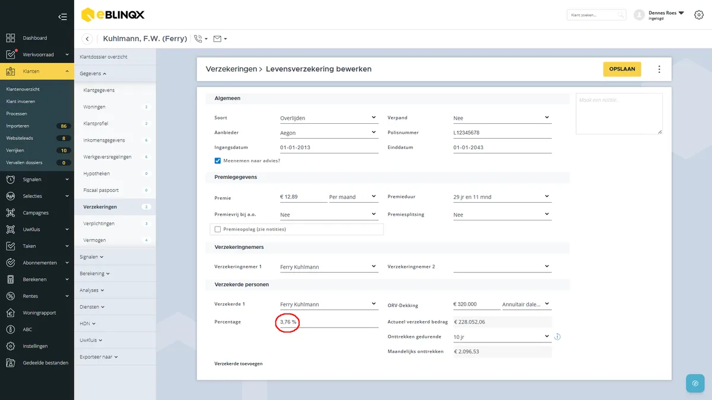
🎉 IT-27139: Nauwkeuriger dalingspercentage bij bestaande annuïtair dalende ORV
Vanaf nu kun je in eBlinqx Hypotheekadvies het dalingspercentage van een bestaande annuïtair dalende overlijdensrisicoverzekering invoeren met twee cijfers achter de komma (bijvoorbeeld 3,76%). Wat betekent dit voor jou? Je advies sluit nóg beter aan op de werkelijke polisvoorwaarden. Besparingssignalen worden alleen getoond als daar echt aanleiding voor is. Je rapportages worden nog nauwkeuriger en duidelijker richting de klant. Deze verbetering voorkomt afrondingsverschillen (zoals het afronden van 3,76% naar 4%) en draagt bij aan een nog betrouwbaarder adviesproces.
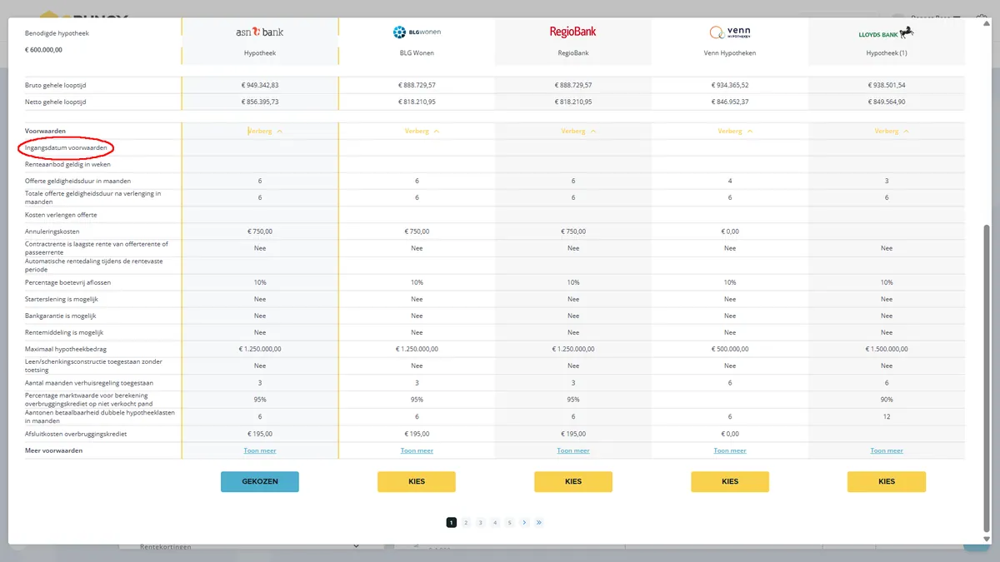
🔍 IT-26965: Duidelijkere terminologie bij vergelijking geldverstrekkers
Om eBlinqx Hypotheekadvies nog consistenter en gebruiksvriendelijker te maken, is de omschrijving ‘Nieuwe voorwaarden per’ in de vergelijkingsweergave van geldverstrekkers aangepast naar ‘Ingangsdatum voorwaarden’. Deze wijziging sluit beter aan bij de terminologie die je elders in eBlinqx Hypotheekadvies tegenkomt en zorgt voor meer duidelijkheid tijdens het vergelijken.
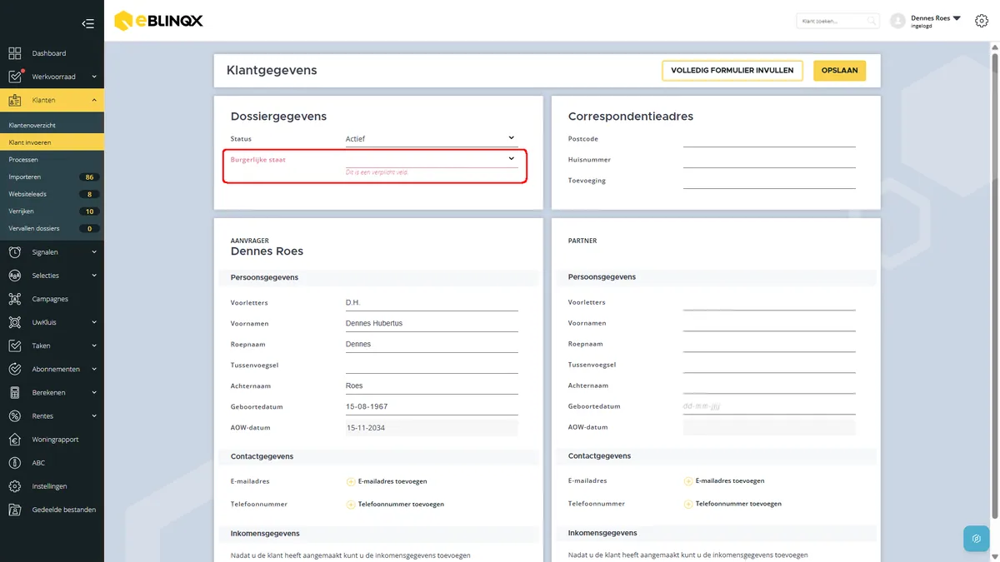
🎯 IT-27102: Burgerlijke staat nu verplicht veld bij nieuwe dossiers
Om te zorgen voor een compleet klantbeeld en een juiste fiscale beoordeling, is het veld Burgerlijke staat vanaf nu verplicht bij het aanmaken van een nieuw dossier in eBlinqx Hypotheekadvies. Deze aanpassing helpt je om sneller tot een passend advies te komen en voorkomt dat belangrijke gegevens over het hoofd worden gezien. Bestaande dossiers blijven uiteraard ongewijzigd. Kortom: een kleine wijziging met groot effect voor de kwaliteit van je adviestraject!
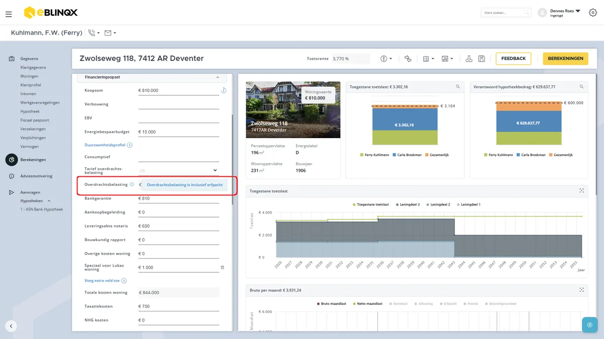
ℹ️ IT-27128: Overdrachtsbelasting inclusief erfpacht
Vanaf nu verschijnt er automatisch een tooltip wanneer ‘Erfpacht’ op Ja staat. Zo weet je direct dat de overdrachtsbelasting in het overzicht inclusief de waarde van de erfpacht is meegenomen. Dit voorkomt misverstanden en helpt je om je klant nog beter te informeren.
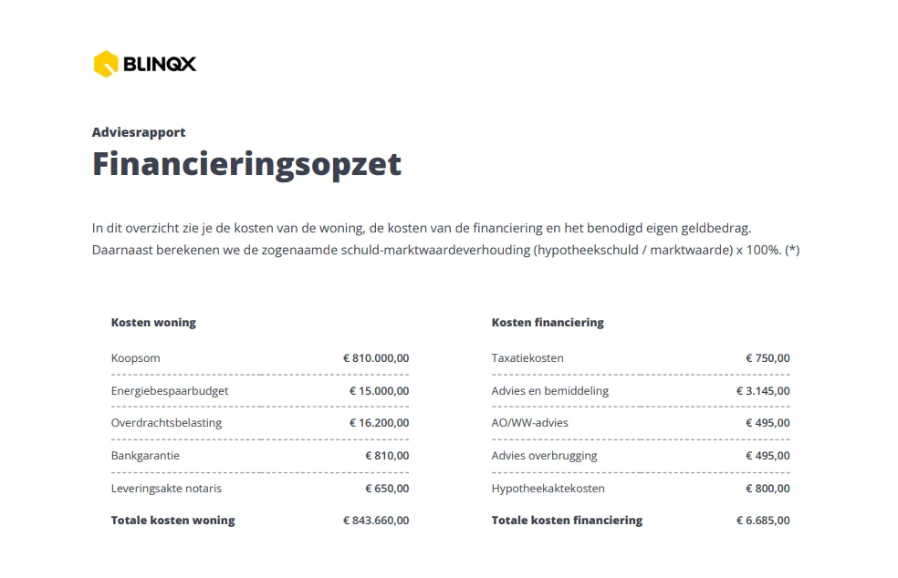
🎯 IT-27147: Financieringsopzet nu direct duidelijk op pagina 1
Vanaf nu wordt de financieringsopzet bij het downloaden als PDF direct correct weergegeven op pagina 1. De eerder voorkomende blanco voorpagina is hiermee opgelost. Je hoeft dus niet langer handmatig pagina 2 te selecteren of aanpassingen te doen bij het delen met je klant of het opslaan in het dossier. Dit bespaart tijd en zorgt voor een nette, directe presentatie van je advies. Dank voor jullie meldingen – samen maken we eBlinqx Hypotheekadvies elke dag een stukje beter!
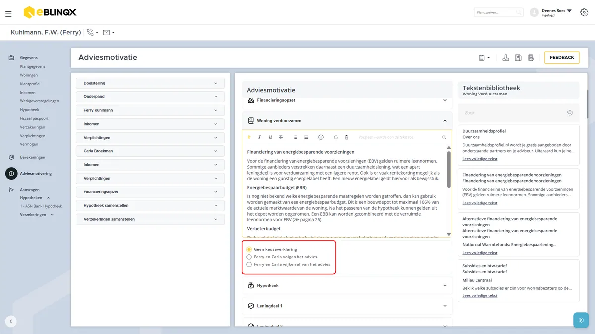
🔔 IT-27060 – Klantkeuze per thema nu volledig instelbaar!
We hebben een krachtige en veel gevraagde uitbreiding doorgevoerd binnen eBlinqx Hypotheekadvies: de klantkeuzeverklaring is vanaf nu volledig optioneel per thema in te stellen! Adviseurs kunnen voortaan zélf bepalen bij welke van de 7 hoofdthema’s in het adviesrapport wél of géén klantkeuze wordt getoond. Het gaat om de volgende thema’s: Hypotheek, Overbrugging, Overlijden partner, Arbeidsongeschiktheid, Werkloosheid, Verduurzamen en Nazorg.
💡 Waarom is dit handig?
In de praktijk komt het regelmatig voor dat een adviseur geen passend advies kan geven bij een thema. Denk bijvoorbeeld aan:
-
Verduurzamen: De klant koopt een nieuwbouwwoning met energielabel A++++. Er valt niets meer te adviseren.
-
Arbeidsongeschiktheid: De klant valt minder dan €125 per maand terug. Geen product beschikbaar, dus geen advies mogelijk.
Voorheen werd toch een keuzeverklaring opgenomen – zelfs als er niets te kiezen viel. Dat is nu verleden tijd! 🧹
⚙️ Hoe werkt het?
Als beheerder stel je dit eenvoudig per scenario in via:
Instellingen → eBlinqx Hypotheekadvies → Algemeen → De keuze van de klant aangeven in adviesrapport
Je kunt kiezen uit drie instellingen:
-
Geen keuzeverklaring bij geen enkel thema
-
Keuzeverklaring bij alle thema’s
-
Flexibel per thema:
-
Klant volgt advies
-
Klant wijkt af van advies
-
Geen keuzeverklaring (nieuw!)
-
💬 Kortom: meer controle, minder ruis én een adviesrapport dat nog beter aansluit bij de werkelijkheid. Een mooie stap vooruit voor zowel adviseur als klant! 🚀
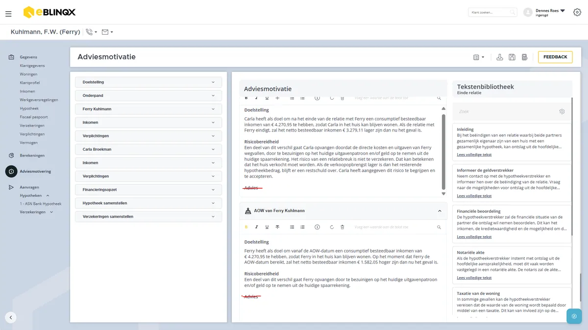
🔔 Release note IT-27110 – ‘Advies’-kopjes verwijderd bij Einde Relatie en AOW
In veel situaties is het niet mogelijk of wenselijk om een advies op te nemen bij de thema’s Einde Relatie en AOW. Daarom hebben we een kleine maar waardevolle verbetering doorgevoerd: De automatische titel ‘Advies’ wordt bij deze thema’s niet langer getoond in het adviesrapport. Adviseurs geven bij deze onderwerpen vaak geen concreet advies – bijvoorbeeld omdat de situatie zich pas in de verre toekomst voordoet of omdat het thema vooral informatief wordt besproken. Om onduidelijkheid te voorkomen en het rapport overzichtelijker te maken, laten we deze titel voortaan automatisch weg. Wil de adviseur toch iets toevoegen? Dat kan uiteraard gewoon: de tekst kan handmatig worden ingevoerd op de gewenste plek in het rapport. Een nette, logische verbetering die bijdraagt aan een professionelere rapportopbouw!
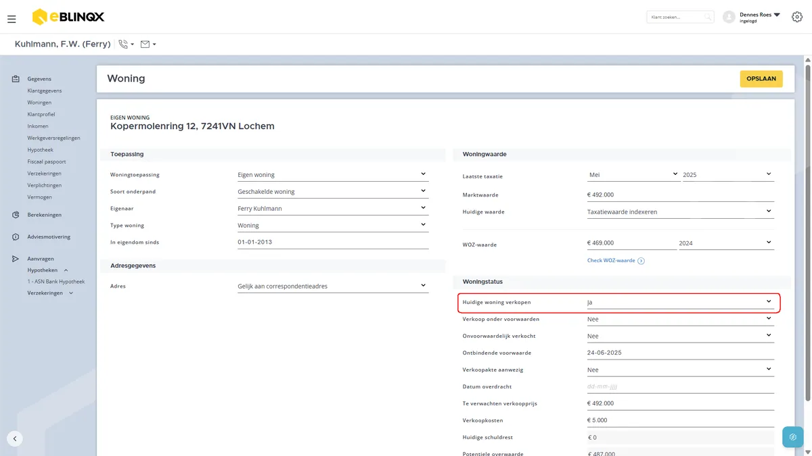
🏡 IT-27063 – Verkoopkeuze huidige woning nu verplicht voor juiste berekening overbrugging
We hebben een belangrijke verbetering doorgevoerd in de inventarisatie van eBlinqx Hypotheekadvies: de vraag “Huidige woning verkopen: JA/NEE” is vanaf nu een verplicht veld bij het inventariseren van de huidige woning. Dit veld is essentieel voor een correcte berekening van de mogelijke overbruggingshypotheek. In de praktijk zagen we dat deze keuze regelmatig werd overgeslagen, met onverwachte of onjuiste uitkomsten als gevolg. Wat is er verbeterd? Het veld “Huidige woning verkopen” kan niet langer leeg worden gelaten. Adviseurs maken nu altijd expliciet een keuze. Hierdoor worden de berekeningen betrouwbaarder en het advies nauwkeuriger. Een kleine verplichting, met een groot effect op de kwaliteit van je advies!
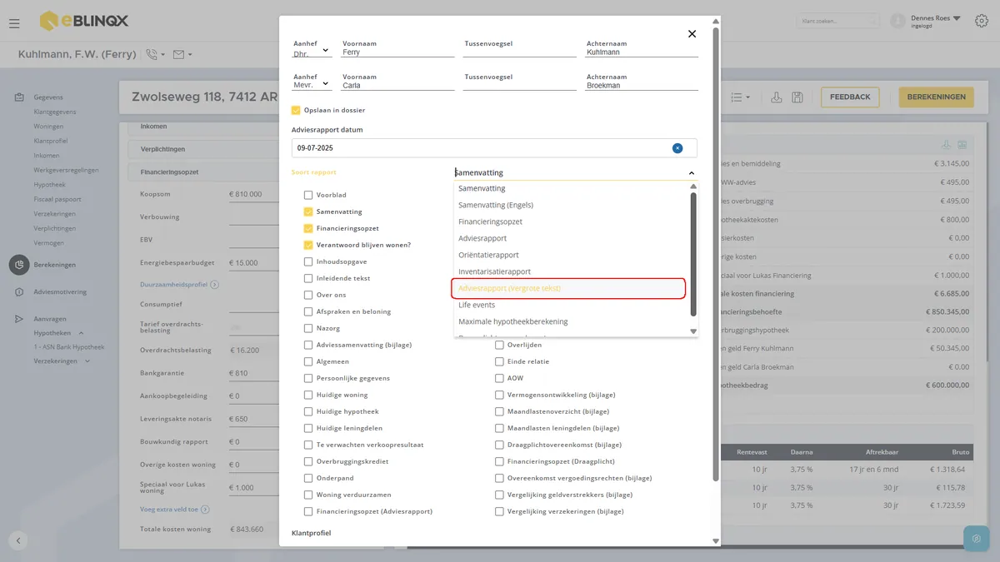
🖋️ IT-26935 – Adviesrapport nu nog leesbaarder dankzij groter lettertype en betere opmaak!
We hebben het adviesrapport een stijlvolle upgrade gegeven! Dankzij verbeteringen in de PDF-service is het rapport nu voorzien van een groter en prettiger leesbaar lettertype, en hebben we ook de witruimtes geoptimaliseerd voor een rustiger en professioneler geheel. Met deze verbeteringen leest het adviesrapport niet alleen fijner voor klanten, maar oogt het ook visueel krachtiger. Op naar nog meer adviesimpact!
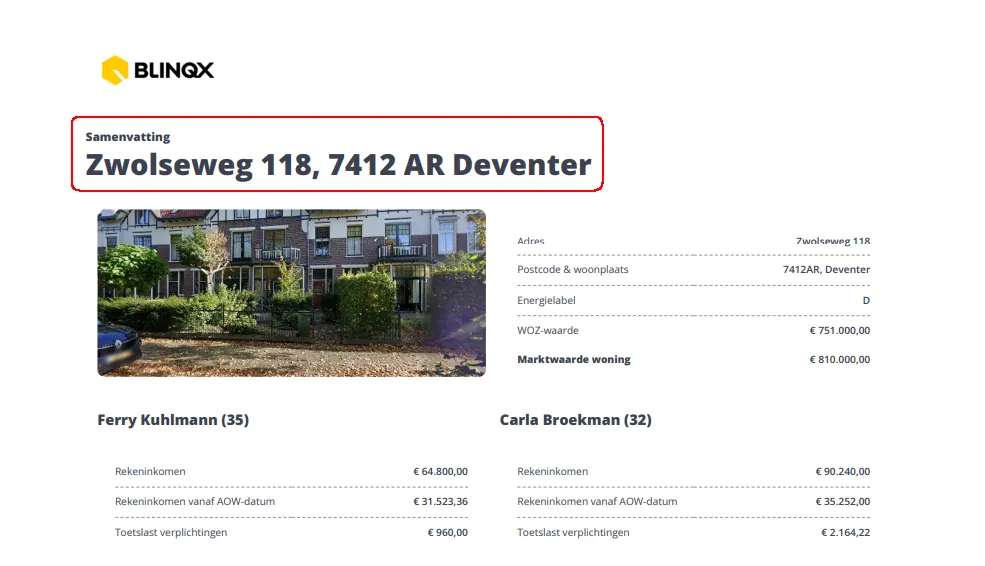
📝 IT-26993 – Slimmere naamgeving voor samenvattingsdocumenten in eBlinqx Hypotheekadvies!
Tot nu toe kreeg de samenvatting de subtitel 'Hypotheekberekening', met de gekozen doelstelling als hoofdtitel. Dit zorgde voor verwarring wanneer er meerdere berekeningen binnen één dossier zijn opgeslagen. De subtitel wordt nu standaard: Samenvatting. De hoofdtitel wordt voortaan automatisch gevuld met de omschrijving die de adviseur zelf meegeeft aan de berekening. Zo wordt het in één oogopslag duidelijk wélke berekening je voor je hebt, en zijn meerdere samenvattingen binnen een dossier eenvoudig van elkaar te onderscheiden. Een kleine wijziging met grote impact voor het dagelijkse advieswerk!
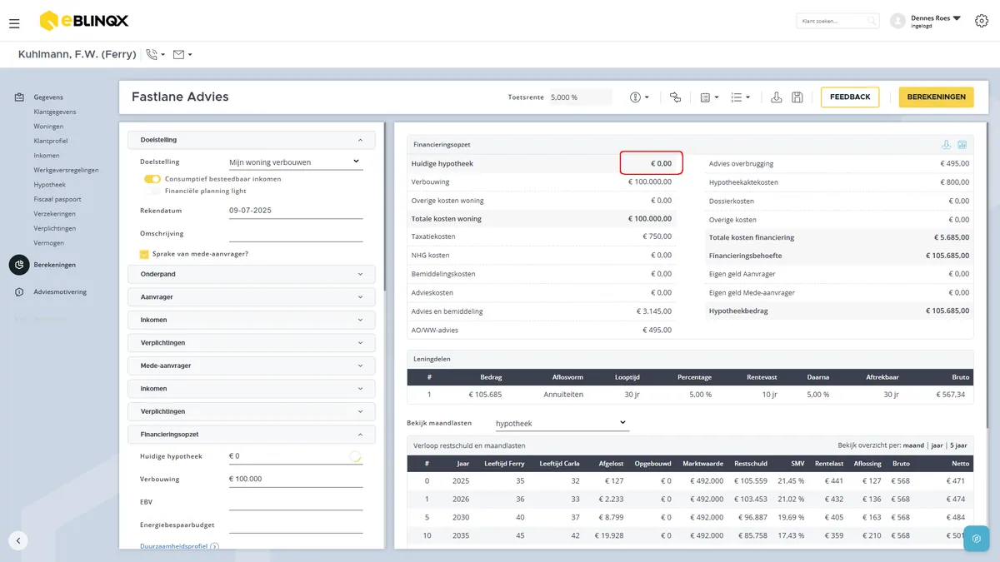
📄 IT-27006 – Financieringsopzet nu ook te downloaden bij hypotheekvrij huis
We hebben een belangrijke verbetering doorgevoerd in de financieringsopzet! Vanaf nu is het gewoon mogelijk om de financieringsopzet te downloaden wanneer de huidige hypotheek op € 0,00 staat. Ook hypotheekvrije woningen worden nu netjes verwerkt in het overzicht Met deze fix zorgen we voor meer duidelijkheid én gemak in dossiers zonder bestaande hypotheek. Wel zo logisch!
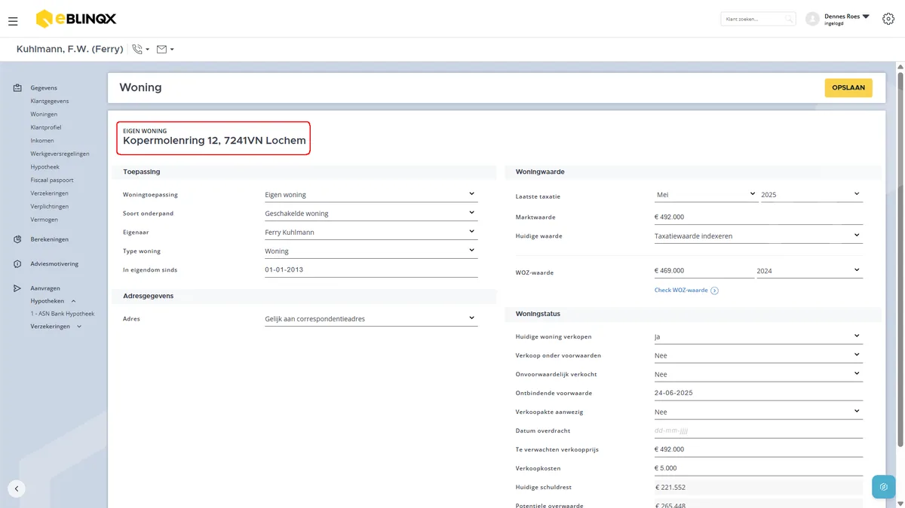
🏡 IT-23086 – Postcode en woonplaats nu zichtbaar bij huidige woning
Vanaf nu tonen we bij het adres van de huidige woning ook de postcode en woonplaats. Een kleine toevoeging die zorgt voor een completer en duidelijker overzicht binnen het klantprofiel. Meer context, minder verwarring. Altijd direct zichtbaar waar de huidige woning zich precies bevindt. Een mooie stap richting nóg overzichtelijkere dossiers!
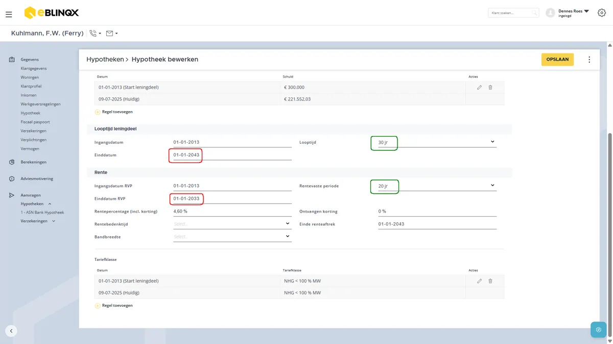
🔄 IT-27046 – Slimmere synchronisatie én automatische looptijd bij hypotheken
We hebben een mooie verbetering doorgevoerd in het inventarisatiegedeelte binnen eBlinqx Hypotheekadvies. Het is vanaf nu ook mogelijk om alleen de einddatum van een rentevastperiode of leningdeel in te vullen, waarna de resterende looptijd automatisch voor je wordt uitgerekend. Minder rekenwerk, meer gemak en altijd consistente looptijden. Met deze optimalisatie maken we het invullen van hypotheekgegevens weer een stukje slimmer én sneller!
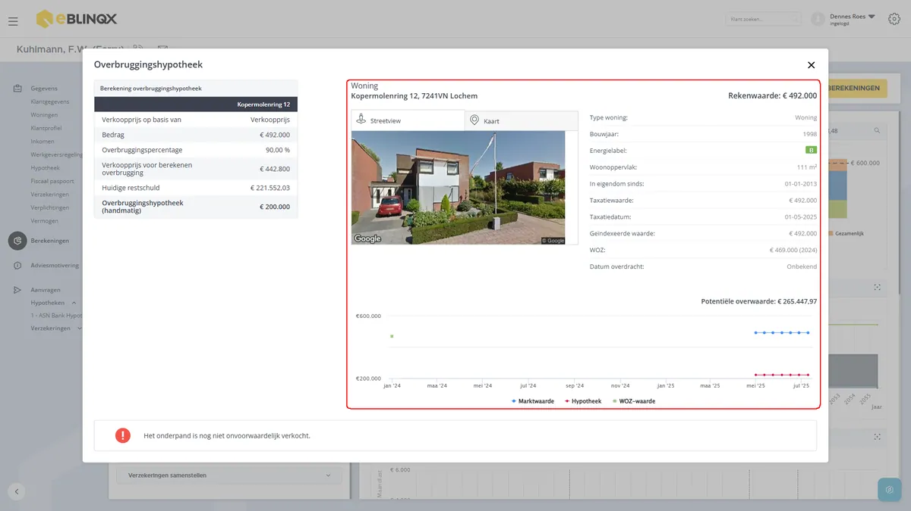
🎨 IT-27023 – Strakkere weergave woninggegevens: cosmetische update doorgevoerd!
We hebben een visuele verbetering doorgevoerd binnen het woningoverzicht! De tekst in het rode katern is iets naar links geplaatst, waardoor bedragen niet langer onnodig onder elkaar vallen. Dit zorgt voor een nettere, strakkere en overzichtelijkere presentatie. Zo maken we eBlinqx Hypotheekadvies elke dag een stukje beter.
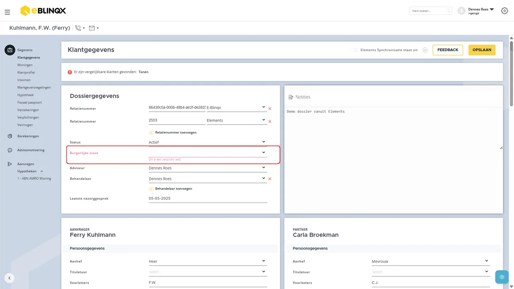
🔍 IT-27102 – Burgerlijke staat nu verplicht veld bij nieuwe dossiers in eBlinqx Hypotheekadvies
Om de kwaliteit van adviezen te waarborgen, is het veld Burgerlijke staat vanaf nu een verplicht veld bij het aanmaken van nieuwe dossiers in eBlinqx Hypotheekadvies. In de praktijk werd dit veld regelmatig niet ingevuld, terwijl het essentieel is voor een correcte fiscale beoordeling en een passend advies. Met deze aanpassing zetten we weer een stap richting nóg betrouwbaardere adviezen.
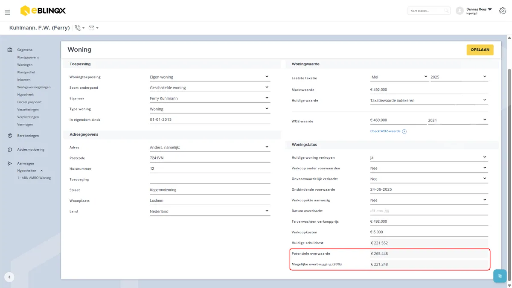
🔍 IT-27022 – Potentiële overwaarde nu overal correct weergegeven
We hebben een mooie verbetering doorgevoerd in het woningoverzicht van eBlinqx Hypotheekadvies. Vanaf nu zie je in zowel de leesmodus als de bewerkmodus altijd duidelijk én correct: de potentiële overwaarde, en het bedrag van een eventuele overbruggingshypotheek.
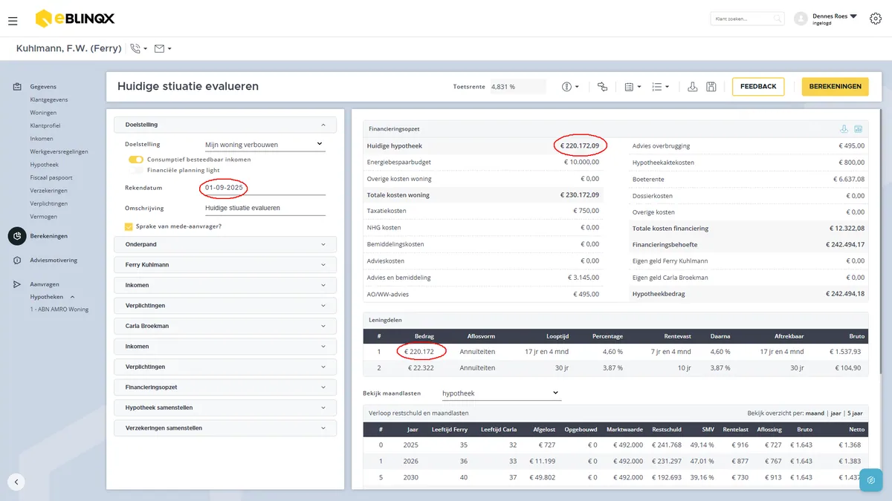
🚀 IT-27016 – Financieringsopzet automatisch in balans bij aangepaste rekendatum
Goed nieuws! Vanaf nu wordt de financieringsopzet in eBlinqx Hypotheekadvies automatisch bijgewerkt zodra je de rekendatum aanpast binnen specifieke doelstellingen. Wanneer je de rekendatum bijvoorbeeld twee maanden vooruit zet bij doelstellingen zoals Mijn woning verbouwen of Mijn hypotheek oversluiten, worden voortaan niet alleen de leningdelen aangepast, maar ook direct de resterende hypotheekhoogte. Zo blijft de opzet altijd kloppend en in balans.
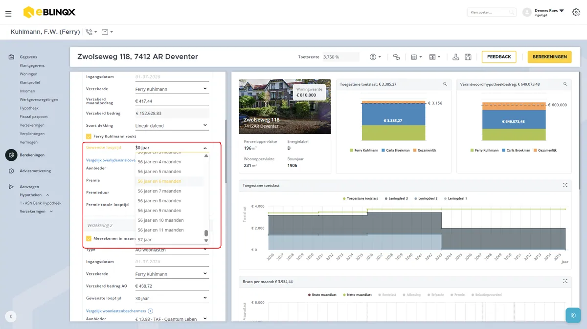
🔄 IT-20716 – Looptijd ORV langer dan 30 jaar mogelijk
Vanaf deze update is het mogelijk om een overlijdensrisicoverzekering (ORV) met een looptijd van langer dan 30 jaar in te voeren in eBlinqx Hypotheekadvies. Tot nu toe was de looptijd van de ORV standaard beperkt tot maximaal 30 jaar of tot de AOW-leeftijd van de verzekerde. Deze beperking is nu versoepeld. De standaard looptijd blijft 30 jaar of tot de AOW-leeftijd, maar adviseurs kunnen de looptijd voortaan handmatig aanpassen naar een langere periode — uiteraard binnen de maximale looptijd die de gekozen verzekeraar hanteert.
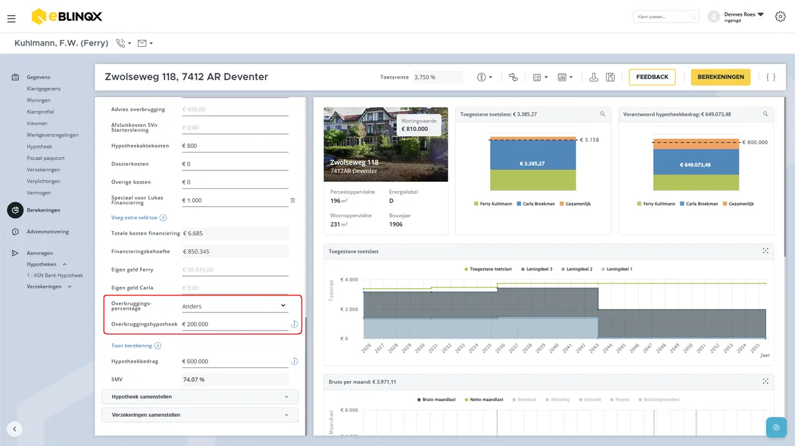
🛠️ IT-27020 – Handmatig ingevuld overbruggingsbedrag blijft nu correct bewaard
Er is een belangrijke verbetering doorgevoerd in het vastleggen van handmatig ingevulde bedragen bij de optie ‘Anders’ binnen het onderdeel Overbrugging.
🔍 Wat was het probleem?
Wanneer een adviseur handmatig een afwijkend bedrag invulde bij de optie ‘Anders’ (bijvoorbeeld €200.000), werd dit bedrag in eerste instantie goed opgeslagen. Echter: na opnieuw inloggen werd het handmatig ingevoerde bedrag onterecht overschreven, vermoedelijk door een automatische herberekening. Hierdoor kon een advies onbedoeld afwijken van de bedoelde invoer.
✅ Wat is er opgelost?
Vanaf deze release geldt:
-
Een handmatig ingevuld bedrag bij de optie ‘Anders’ voor de overbruggingslening wordt niet meer overschreven bij het opnieuw inloggen.
-
De ingevoerde waarde blijft stabiel bewaard, ook bij sessiewisselingen.
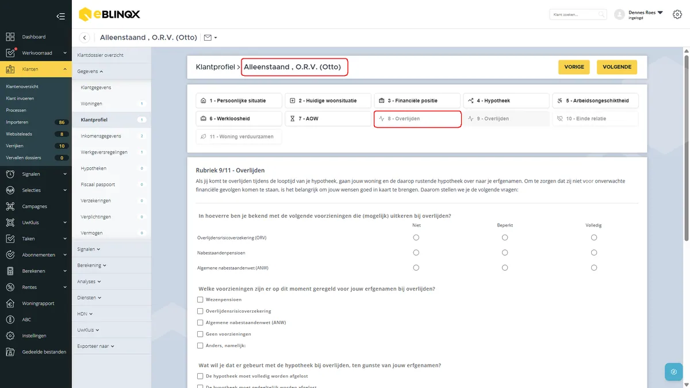
📘 IT-26958 – Klantprofiel uitgebreid voor alleenstaande klanten bij overlijdensscenario
Vanaf nu is het mogelijk om in eBlinqx Hypotheekadvies ook voor alleenstaande klanten een zorgvuldige inventarisatie te doen rondom het overlijdensrisico. Wanneer in het klantprofiel bij de vraag “Woon of ga je samenwonen met een partner?” het antwoord Nee wordt gegeven:
-
wordt het hoofdstuk ‘Overlijden partner’ automatisch hernoemd naar ‘Overlijden’;
-
wordt dit hoofdstuk actief en invulbaar, in plaats van verborgen zoals voorheen;
-
verschijnen er aangepaste vragen die specifiek zijn afgestemd op de situatie van een alleenstaande klant, zonder verwijzingen naar een partner.
✅ Wat levert dit op?
Deze uitbreiding maakt het mogelijk om ook bij alleenstaande klanten:
-
een volwaardige risicoanalyse bij overlijden te doen,
-
de juiste wensen en doelen vast te leggen,
-
en advies op maat te geven – zonder irrelevante vragen of verwarring.
Resultaat: Een vollediger klantprofiel én betere aansluiting op de werkpraktijk van de adviseur.
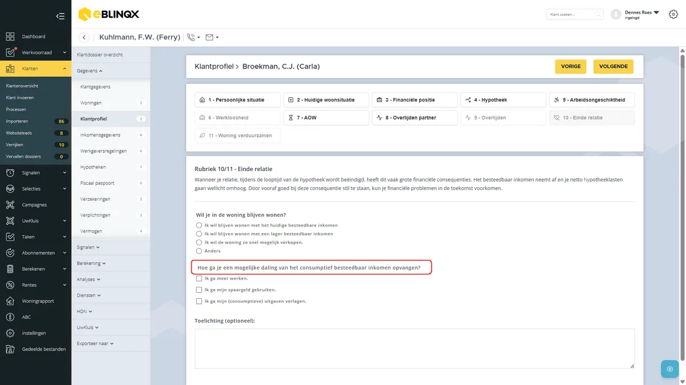
🔄 IT-26964 – Terminologie aangepast bij 'Einde relatie' in klantprofiel
Om de terminologie in eBlinqx Hypotheekadvies verder te uniformeren, is de vraagstelling binnen het klantprofiel bij het onderdeel ‘Einde relatie’ aangepast. Waar voorheen stond: “Hoe ga je een mogelijke daling van het inkomen opvangen?” is dit nu gewijzigd naar: “Hoe ga je een mogelijke daling van het consumptief besteedbaar inkomen opvangen?” Deze aanpassing is doorgevoerd in alle relevante weergaven:
-
de invoervariant (klantomgeving),
-
de leesvariant (adviseur),
-
en de output van het klantprofiel, zowel los als geïntegreerd in het adviesrapport.
Met deze update is de terminologie volledig in lijn gebracht met de rest van de applicatie.
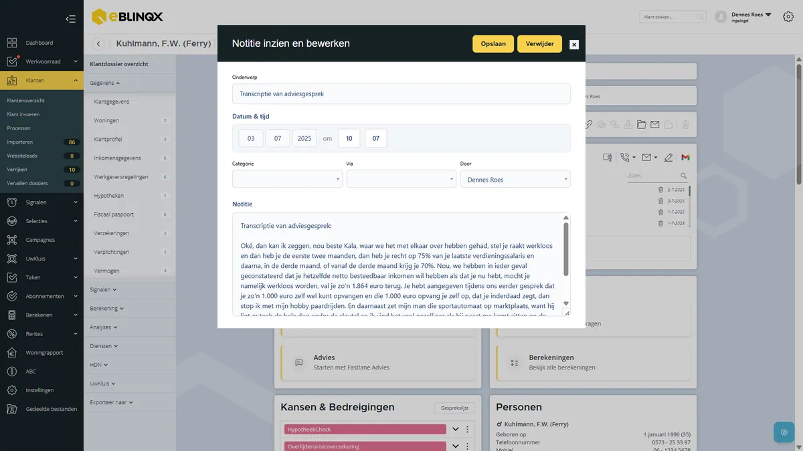
🪄 IT-27041: Verbeterde styling voor AI-notities
We hebben de vormgeving van het AI-notitievenster aangepakt! De styling sluit nu volledig aan bij de herkenbare eBlinqx Hypotheekadvies-ervaring, met meer consistentie, leesbaarheid en gebruiksgemak. Dit betekent: Een strakker en overzichtelijker ontwerp, verbeterde layout en spacing voor meer focus op de inhoud en een betere integratie binnen de bestaande gebruikersinterface. Dankzij deze update voelt het lezen van AI-notities nu nog intuïtiever aan.
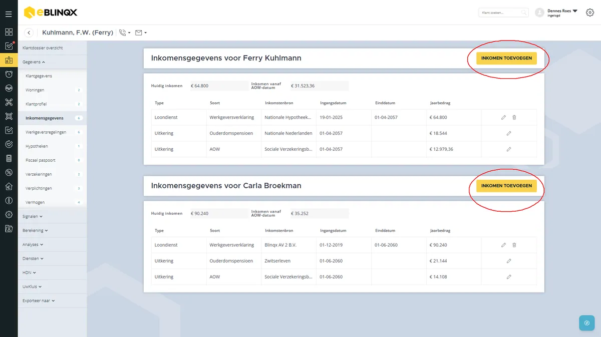
✍️ IT-26962: Tekstuele aanpassing actiebuttons in de inventarisatie
We hebben de teksten van diverse actieknoppen in de inventarisatie aangepast om ze nog duidelijker, consistenter en gebruiksvriendelijker te maken. De knoppen beginnen nu allemaal met een werkwoord, zodat je in één oogopslag ziet wat je kunt doen:
-
Nieuwe woning toevoegen → Woning toevoegen
-
Nieuw klantprofiel → Klantprofiel toevoegen
-
Nieuw inkomen → Inkomen toevoegen
-
Nieuwe regeling → Werkgeversregeling toevoegen
-
Nieuwe hypotheek → Hypotheek toevoegen
-
Nieuwe verzekering → Verzekering toevoegen
-
Nieuwe verplichting → Verplichting toevoegen
-
Nieuw vermogen → Vermogen toevoegen
Deze kleine wijziging zorgt voor een fijnere gebruikerservaring en sluit beter aan bij de rest van eBlinqx Hypotheekadvies.
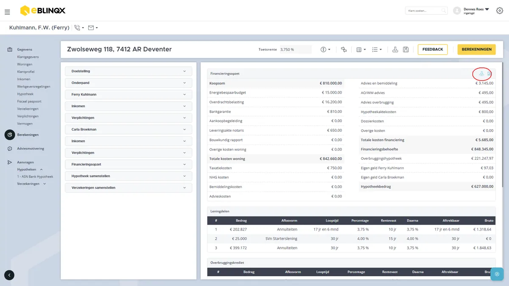
📊 IT-3587 / IT-27000: Financieringsopzet nu exporteerbaar naar Excel!
Goed nieuws voor iedereen die graag met cijfers werkt! Vanaf nu kun je de gegevens uit de financieringsopzet eenvoudig downloaden als CSV-bestand. Dit maakt het aanpassen van de financieringsopzet een stuk makkelijker. Daarnaast hebben we nog twee verbeteringen doorgevoerd:
-
Lange veldnamen worden weer netjes en volledig leesbaar weergegeven
-
Lege veldnamen worden niet langer toegestaan, zodat je altijd overzicht houdt
Dankzij deze update werk je nog soepeler en overzichtelijker met financieringsopzetten binnen én buiten eBlinqx Hypotheekadvies.
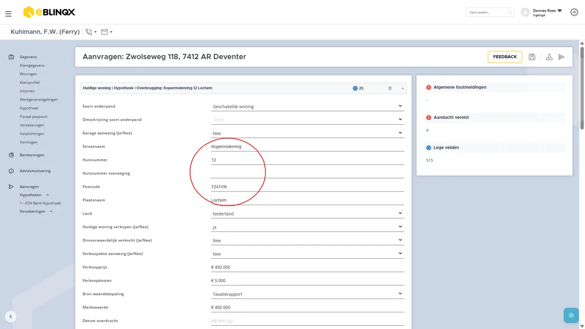
🛠️ IT-27018: Onderpandgegevens in HDN-formulier weer correct gevuld
We hebben een bug opgelost waarbij in sommige gevallen de huidige adresgegevens onterecht werden ingevuld als onderpandadres in het HDN-formulier. Dankzij deze fix worden de juiste gegevens nu weer netjes op de juiste plek gezet. Zo voorkom je verwarring én hoef je als adviseur geen correcties meer aan te brengen bij het verzenden van de aanvraag. Kortom: weer een stukje betrouwbaarder én gebruiksvriendelijker! 💪
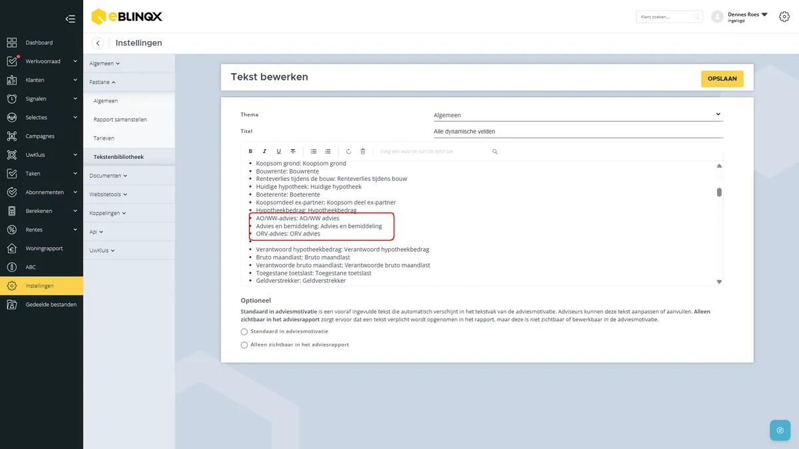
🧩 IT-26956: Drie nieuwe dynamische velden voor adviesrapport en motivering
We breiden de mogelijkheden voor maatwerk in het adviesrapport verder uit! Vanaf nu zijn er drie nieuwe dynamische velden beschikbaar die automatisch gevuld worden op basis van de financieringsopzet. Deze velden kun je gebruiken in zowel de tekstenbibliotheek als in de adviesmotivering:
-
AO/WW-advies
-
Advies en bemiddeling
-
ORV-advies
Met deze uitbreiding maak je rapporten nóg persoonlijker en vollediger, zonder extra werk. Efficiënt én professioneel!
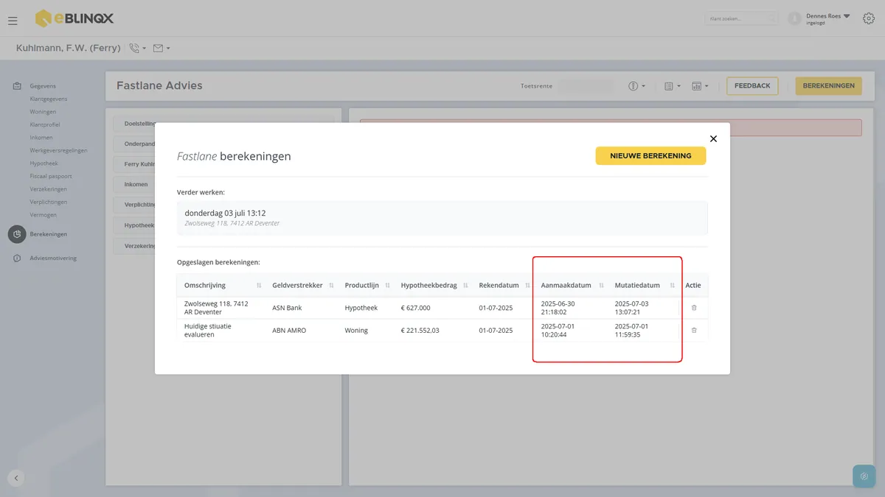
🗂️ IT-25384: Meer inzicht in je berekeningen met aanmaak- en mutatiedatum
Het overzicht van gemaakte berekeningen is uitgebreid! Vanaf nu zie je bij elke berekening niet alleen de titel, maar ook:
-
📅 Aanmaakdatum (datum waarop de berekening is gestart)
-
🔄 Mutatiedatum (datum waarop de berekening is aangepast)
Zo heb je als adviseur altijd inzicht in wanneer een berekening is gemaakt of voor het laatst gewijzigd. Handig voor dossiervorming, voortgangsbewaking én samenwerking binnen je team. Weer een stap richting nóg meer overzicht en controle in eBlinqx Hypotheekadvies!